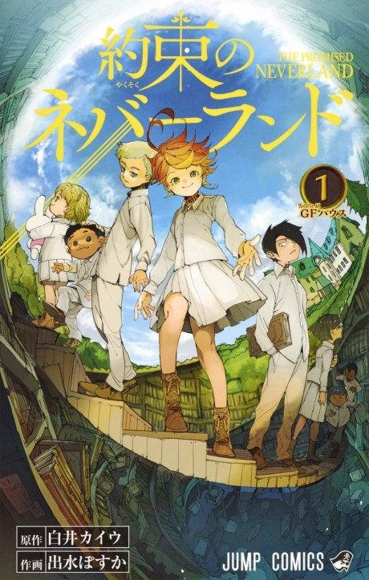

The Promised Neverland
約束のネバーランド
After the anime, read the manga from Chapter 38.
8.3AniList score
—Animeter, no votes yet
23episodes, 2 seasons
Filler
Season 2 has no filler as such, but episodes 15-17 and 19 mix manga material with new content and episodes 20-23 are an anime-original ending that departs from the manga.
Episodes23
Canon19
Filler0
Mixed4
1234567891011121314151617181920212223
CanonMixedFillerRecap